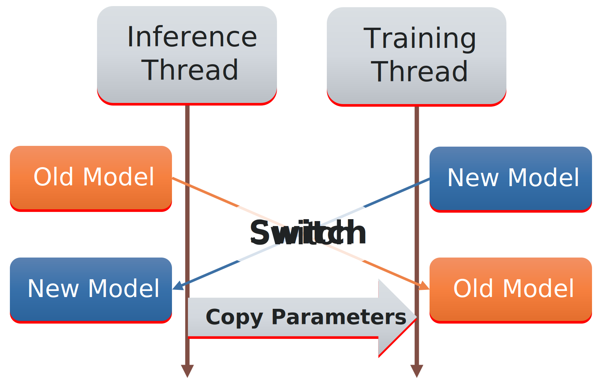

🔥 PyTorch Integration¶
The torch submodule provides integration with PyTorch for PAMIQ-Core, enabling deep learning models to be used within the multi-threaded adaptive learning architecture.
Overview¶
PyTorch integration in PAMIQ-Core includes specialized implementations of:
-
Model Classes:
TorchInferenceModel: Wrapper for PyTorch models in the inference threadTorchTrainingModel: Wrapper for PyTorch models in the training thread
-
Trainer Class:
TorchTrainer: Base class for implementing PyTorch training algorithms
These components handle thread-safe model synchronization, optimizer management, and state persistence for PyTorch models.
Model Synchronization Architecture¶
PAMIQ-Core uses an efficient model synchronization mechanism for PyTorch models:

The synchronization process works as follows:
- Training occurs in the training thread, updating the
TorchTrainingModel - When training completes, the
sync()method is called - Instead of copying parameters to inference model (which would be slow for large models), the models are swapped and copying inference model to training model.
- Gradient information is preserved during the swap to maintain training continuity
- The inference thread immediately gets access to the updated model
This approach offers significant performance benefits over parameter copying, especially for large deep learning models.
Using PyTorch Models¶
Creating a PyTorch Training Model¶
To use a PyTorch model in PAMIQ-Core, wrap it in a TorchTrainingModel:
import torch.nn as nn
from pamiq_core.torch import TorchTrainingModel
# Create a PyTorch neural network
class SimpleNetwork(nn.Module):
def __init__(self):
super().__init__()
self.fc1 = nn.Linear(10, 64)
self.fc2 = nn.Linear(64, 1)
self.relu = nn.ReLU()
def forward(self, x):
x = self.relu(self.fc1(x))
return self.fc2(x)
# Wrap it in a TorchTrainingModel
model = TorchTrainingModel(
model=SimpleNetwork(),
has_inference_model=True,
inference_thread_only=False,
device="cuda:0" # Optional: specify device
)
The TorchTrainingModel provides several important parameters:
- model: The PyTorch nn.Module to wrap
- has_inference_model: Whether to create an inference model (default: True)
- inference_thread_only: Whether this model is used only for inference (default: False)
- device: The device to place the model on
- dtype: The data type to use for the model
- inference_procedure: Custom inference procedure for specialized models
Using Pretrained Models¶
You can load pretrained models by providing the pretrained_parameter_file parameter:
pretrained_model = TorchTrainingModel(
model=SimpleNetwork(),
pretrained_parameter_file="path/to/model_weights.pt"
)
Using the get_device Function¶
The get_device function is a helpful utility for determining which device a model is running on:
from pamiq_core.torch import get_device
import torch.nn as nn
# Create a model
model = nn.Linear(10, 1)
# Check which device it's on
device = get_device(model) # Returns CPU device by default
print(f"Model is on device: {device}")
# Move to GPU if available
if torch.cuda.is_available():
model = model.to("cuda")
device = get_device(model) # Now returns CUDA device
print(f"Model moved to device: {device}")
This is particularly useful in custom inference procedures:
def custom_inference_procedure(model: nn.Module, x: torch.Tensor) -> torch.Tensor:
# Get the device where the model runs
device = get_device(model)
# Move input to the same device as the model
x = x.to(device)
# Perform inference
with torch.no_grad():
return model(x)
⚠️ Important Considerations¶
When using PyTorch models in PAMIQ-Core, be aware of the following:
-
Model State Management: Since the models are swapped during synchronization, any state stored inside the model (like buffers or running statistics) will also be swapped. This means:
- Do not store transient state in the model that shouldn't be shared between threads
- Be cautious with models that maintain internal state beyond parameters
-
Device Management: Models are automatically moved to the specified device, but input tensors in custom code must be moved explicitly
-
Thread Safety: The model synchronization ensures thread safety, but you should not directly access the models from multiple threads
Implementing PyTorch Trainers¶
Basic TorchTrainer¶
The TorchTrainer class provides a foundation for implementing PyTorch training algorithms:
from pamiq_core.torch import TorchTrainer
import torch.optim as optim
from typing import override
class MyPytorchTrainer(TorchTrainer):
@override
def on_training_models_attached(self) -> None:
"""Called when training models are attached to the trainer."""
super().on_training_models_attached()
# Get model with type checking
self.policy_model = self.get_torch_training_model("policy", nn.Sequential)
self.value_model = self.get_torch_training_model("value")
@override
def create_optimizers(self) -> dict[str, optim.Optimizer]:
"""Create optimizers for training.
Returns:
Dictionary mapping names to optimizers
"""
return {
"policy_optimizer": optim.Adam(self.policy_model.model.parameters(), lr=0.001),
"value_optimizer": optim.Adam(self.value_model.model.parameters(), lr=0.001)
}
@override
def train(self) -> None:
"""Implement training logic."""
# Get training data
data = self.get_data_user("experience").get_data()
states = torch.tensor(data["states"])
actions = torch.tensor(data["actions"])
rewards = torch.tensor(data["rewards"])
# Training loop
for _ in range(10): # 10 optimization steps
# Forward pass
action_logits = self.policy_model(states)
values = self.value_model(states)
# Calculate losses
policy_loss = calculate_policy_loss(action_logits, actions, rewards)
value_loss = calculate_value_loss(values, rewards)
# Backward pass and optimize
self.optimizers["policy_optimizer"].zero_grad()
policy_loss.backward()
self.optimizers["policy_optimizer"].step()
self.optimizers["value_optimizer"].zero_grad()
value_loss.backward()
self.optimizers["value_optimizer"].step()
Using Learning Rate Schedulers¶
You can also include learning rate schedulers in your trainer:
@override
def create_optimizers(self) -> tuple[dict[str, optim.Optimizer], dict[str, optim.lr_scheduler.LRScheduler]]:
"""Create optimizers and schedulers for training.
Returns:
Tuple containing optimizers dictionary and schedulers dictionary
"""
# Create optimizers
optimizers = {
"policy_optimizer": optim.Adam(self.policy_model.model.parameters(), lr=0.001)
}
# Create schedulers
schedulers = {
"policy_scheduler": optim.lr_scheduler.ExponentialLR(
optimizers["policy_optimizer"],
gamma=0.99
)
}
return optimizers, schedulers
Type-Checked Model Access¶
The get_torch_training_model method provides type-checked access to PyTorch models:
# Get any torch model
model = self.get_torch_training_model("policy")
# Get model with type checking - ensures model is a CNN
cnn_model = self.get_torch_training_model("encoder", nn.Conv2d)
This provides runtime type checking and helps catch errors early.
Optimizer State Management¶
The TorchTrainer automatically manages optimizer state across training sessions. This means:
- Optimizer states are automatically saved and restored during
save_stateandload_state - When models are synchronized, optimizer states are preserved
- Learning rate scheduler states are also maintained
This ensures training can continue correctly even model swapping or after state loading.
Advanced Usage¶
Custom Inference Procedures¶
You can define custom inference procedures for specialized needs:
def my_inference_procedure(model: nn.Module, input_tensor: torch.Tensor) -> torch.Tensor:
"""Custom inference procedure for a specific model architecture."""
# Preprocessing
processed_input = input_tensor / 255.0
# Run model with gradient accumulation disabled
with torch.no_grad():
output = model(processed_input)
# Postprocessing
return torch.softmax(output, dim=1)
# Use the custom procedure
model = TorchTrainingModel(
model=MyNetwork(),
inference_procedure=my_inference_procedure
)
API Reference¶
More details, Checkout to the API Reference